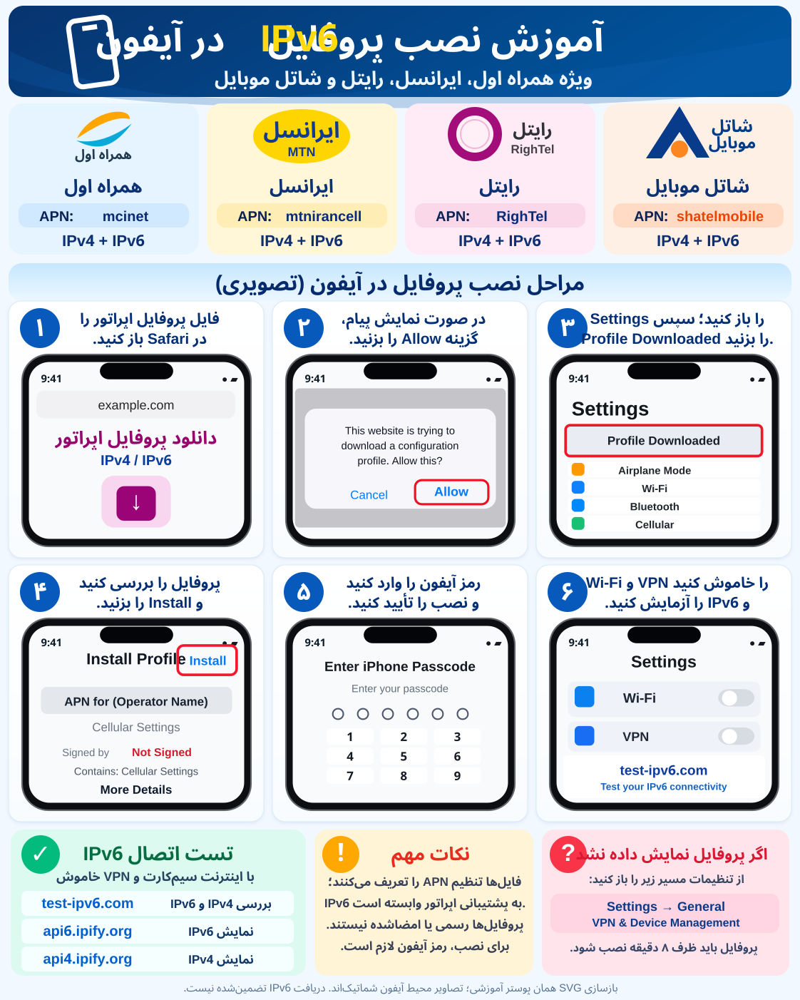

MCI
همراه اول
APN mcinet
IPv4 + IPv6 (Dual Stack)
دریافت فایل .mobileconfig ↙چهار اپراتور همراه اول، ایرانسل، رایتل و شاتل موبایل؛ دانلود پروفایل و آموزش تصویری نصب و آزمایش IPv6. پروفایلها غیررسمی و فاقد امضای دیجیتالاند.
انتخاب اپراتور و دریافت پروفایل ←فقط فایل مربوط به سیمکارت خود را دریافت کنید. این فایلها غیررسمی، بدون امضای دیجیتال و آزمایشیاند. قبل از نصب، جزئیات را در آیفون بررسی کنید.
APN mcinet
IPv4 + IPv6 (Dual Stack)
دریافت فایل .mobileconfig ↙APN mtnirancell
IPv4 + IPv6 (Dual Stack)
دریافت فایل .mobileconfig ↙APN RighTel
IPv4 + IPv6 (Dual Stack)
دریافت فایل .mobileconfig ↙APN shatelmobile
IPv4 + IPv6 (Dual Stack)
دریافت فایل .mobileconfig ↙
دریافت نسخه برداری SVG پوستر آموزشی ↓
نصب موفق بهمعنی دریافت IPv6 نیست؛ نتیجه را قبل و بعد از نصب با Wi-Fi و VPN خاموش مقایسه کنید.
AllowedProtocolMask=3 تنها اجازه IPv4/IPv6 است، نه تضمین تخصیص IPv6. برای شاتل موبایل، ارائه IPv6 عمومی روی همه سیمکارتها تأیید نشده است. نصب و اعمال APN سفارشی در بعضی آیفونها به تنظیمات اپراتور/مدیریت دستگاه وابسته است. اگر اینترنت قطع شد، از Settings → General → VPN & Device Management پروفایل را حذف کنید.